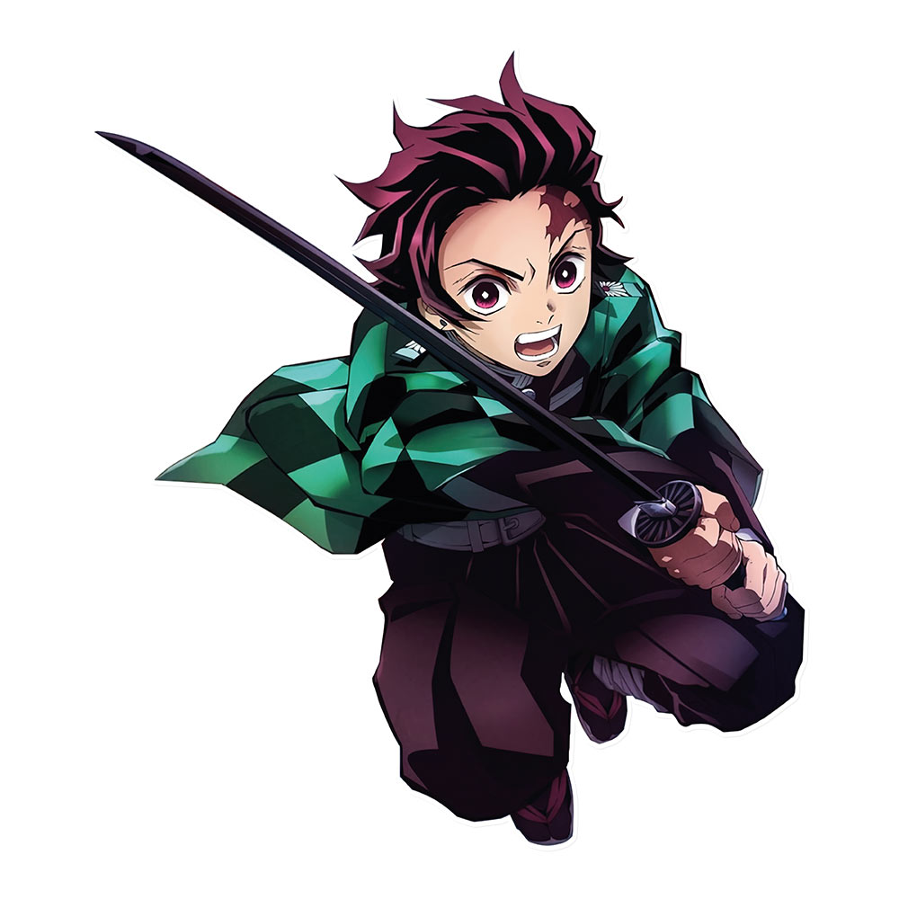

Demon Slayer
| Nom du manga | Volumes | Description du volume | Année publication |
|---|---|---|---|
| Arc de la Montagne Fujikasane | Vol. 1-2 | Tanjiro rejoint les Pourfendeurs | 2016 |
| Arc du Manoir Tsuzumi | Vol. 3-4 | Introduction de Zenitsu et Inosuke | 2016 |
| Arc du Mont Natagumo | Vol. 4-6 | Combat contre les Démons Araignées | 2017 |
| Arc de l'Entraînement à la Réhabilitation | Vol. 7 | Réhabilitation physique au domaine des Papillons | 2018 |
Informations détaillées sur Demon Slayer :
Demon Slayer: Kimetsu no Yaiba est un manga écrit et illustré par Koyoharu Gotouge. Il a été publié dans le magazine Weekly Shōnen Jump de février 2016 à mai 2020 et compte 23 volumes. Son adaptation en anime par le studio ufotable a connu un immense succès mondial.
Le Synopsis :
L’histoire suit Tanjiro Kamado, un jeune garçon au cœur pur qui vit dans une montagne avec sa famille. Un jour, il découvre que sa famille a été massacrée par un démon, et que sa sœur Nezuko est devenue une démone. Déterminé à la sauver et à venger sa famille, Tanjiro rejoint les Pourfendeurs de Démons (Demon Slayers), un groupe de guerriers qui combattent les démons à l’aide de techniques spéciales et de lames nichirin.
Les personnages principaux :
- Tanjiro Kamado : Héros principal, maniant le Souffle de l’Eau et plus tard le Souffle du Soleil
- Nezuko Kamado : Sa sœur, transformée en démone mais conservant son humanité
- Zenitsu Agatsuma : Un compagnon peureux mais extrêmement puissant avec le Souffle de la Foudre
- Inosuke Hashibira : Guerrier impulsif portant un masque de sanglier, utilisant le Souffle de la Bête
- Kanao Tsuyuri : Disciple de Shinobu Kocho, utilisant le Souffle de la Fleur
- Les Piliers (Hashira) : Les guerriers d’élite des Pourfendeurs, chacun maîtrisant un souffle unique